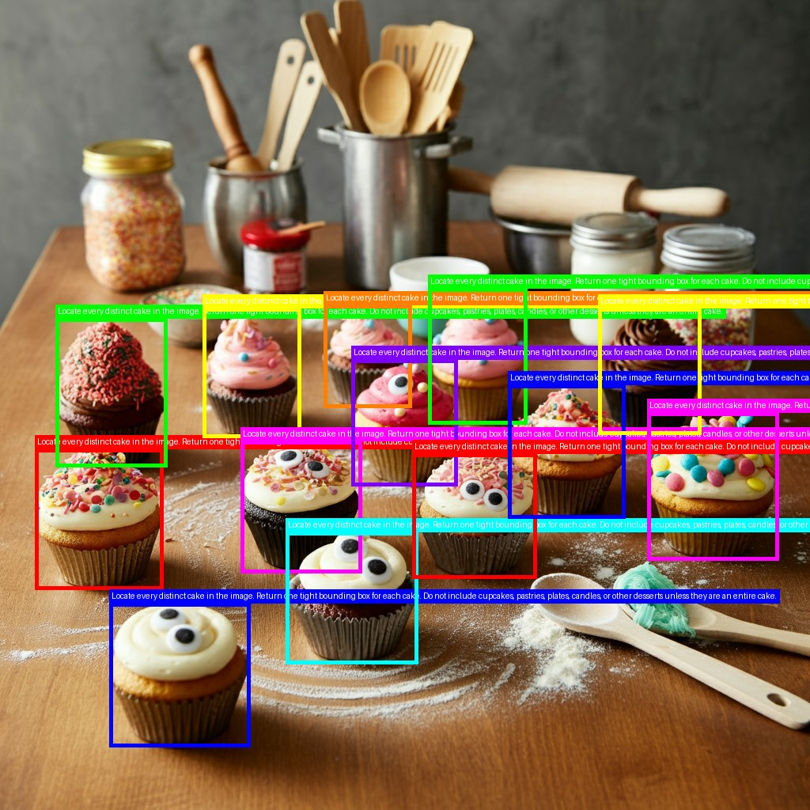
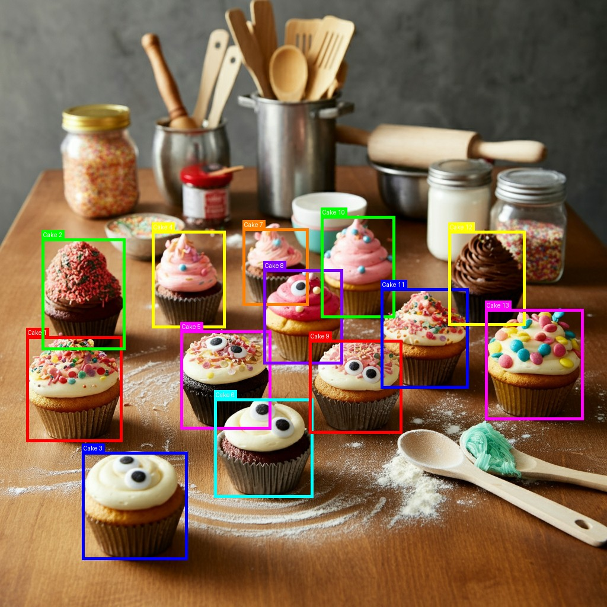
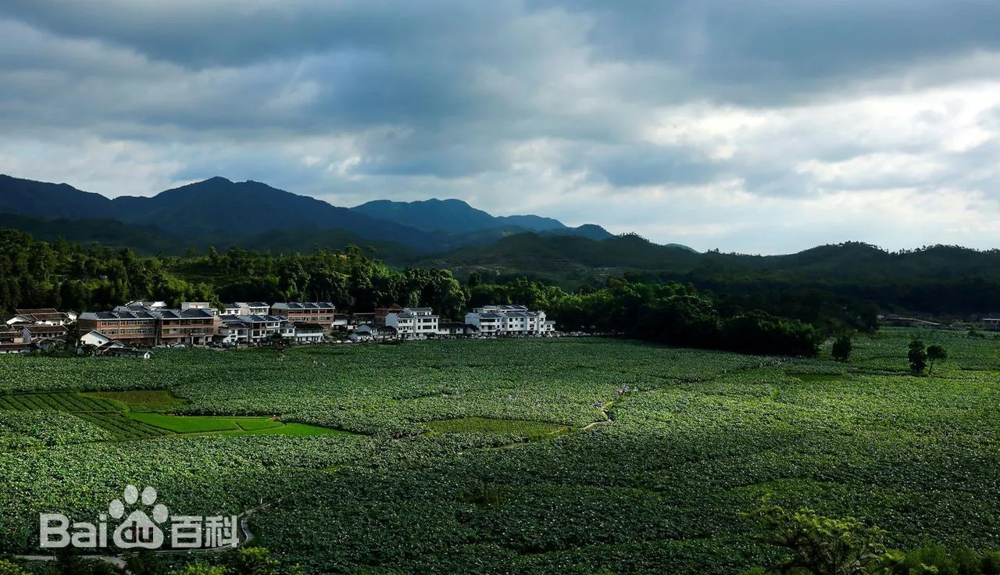

Locate the cakes, then identify a place Codex
@/path/to/cakes.png Could you locate all the cakes by API and give me an annotated image?
I’ll use the repository’s vision-language API workflow to detect the cakes, then render the returned boxes onto the image.
const r = await tools.exec_command({"cmd":"sed -n '1,240p' /path/to/SKILL.md && printf '\\n--- CLAUDE ---\\n' && sed -n '1,260p' CLAUDE.md && printf '\\n--- IMAGE ---\\n' && file /path/to/cakes.png","workdir":"/path/to/Qwen-MM-Plugins","yield_time_ms":10000,"max_output_tokens":30000});
text(r.output);Script completed
Wall time 0.1 seconds
Output:
---
name: qwen-mm-plugins-core
description: Vision-Language MCP tools for reading/visualizing any file (images, videos, documents, code, data, 3D models, etc.) and calling VL APIs (caption, ASR, search, etc.).
---
# Qwen-MM-Plugins Core
You have `qwen-mm-plugins-core` MCP tools available. Use them to read and visualize any file (images, videos, documents, code, data, 3D models, notebooks, etc.) and to call vision-language APIs. Prefer these MCP tools over manual scripting.
Check the `qwen-mm-plugins-core` tools in your tool list for full schemas and parameters.
## When to Use Which Tool
Native reading (feeds content directly to you):
- **See a file** (PDF, Office, CSV, code, notebook, 3D, ...) → `visualize`
- **Read an image** with dynamic resolution → `read_image`
- **Read a video** (extract frames) → `read_video`
- **Save specific frame(s)** of a video to file (for image_search) → `save_view` (pass `times=[...]`)
Producing / annotating (writes an image file):
- **Crop a rectangular region** from an image → `crop`
- **Draw bounding boxes** on an image (e.g. to visualize `grounding` output) → `draw_bbox`
External API calls (DashScope):
- **Call an external VLM** about images/videos → `vision_chat`
- **Transcribe speech** from audio/video → `transcribe_audio`
- **Detect/locate objects** in an image → `grounding`
- **Extract text** from an image → `ocr`
- **Segment objects** in an image → `segmentation`
- **Reverse image search** to identify an entity from a frame → `image_search`
- **Search the web** for facts → `web_search`
- **Read a web page** in depth → `web_extractor`
## Visualize — Supported Formats
| Category | Extensions | Notes |
|----------|-----------|-------|
| Documents | `.pdf`, `.svg` | Built-in (pypdfium2 + resvg) |
| Office | `.docx`, `.pptx`, `.vsdx` | Needs `libreoffice` |
| Data | `.csv`, `.xlsx` | Text table + chart image |
| Code | `.js`, `.ts`, `.py`, `.go`, `.rs`, `.md`, ... | Returns text (markdown code block) |
| Plain text | `.txt`, `.text`, `.log` | Returns text (fenced block) |
| Web pages | `.html`, `.htm`, `.mhtml` | Screenshot; needs `playwright` |
| Diagrams | `.drawio` | XML → SVG rendering |
| Subtitles | `.srt`, `.vtt` | Returns text |
| 3D Models | `.obj`, `.stl`, `.glb`, `.gltf`, `.fbx`, `.ply`, `.step`, `.stp` | Built-in; `blender` for best quality |
| GIS/Geo | `.geojson`, `.kml`, `.shp` | Built-in |
| Notebooks | `.ipynb` | Text cells + embedded images |
| LaTeX | `.tex` | Compiles to PDF; falls back to source on failure |
| Images/Videos | `.jpg`, `.mp4`, ... | Delegates to `read_image`/`read_video` |
Use `pages` for page ranges, `budget` for resolution, `max_pages` to cap output.
## Tips
**Resolution budgets**: `small` for preview, `normal` (~1024) default, `large` for fine detail.
**Video strategy**: `fps=0` auto-selects. Skim with `fps=1, budget="normal"` in 5-min chunks, then detail with `fps=2, budget="large"` on interesting segments. Use `start_time`/`end_time` for windowing.
**Vision chat**: pass `images`/`videos` + `text` prompt. Default model `qwen3.7-plus`. Use `dry_run=true` to inspect payloads. Details in `references/vision_chat.md`.
**Video knowledge & search** (any video question that needs external knowledge — identify a specific thing, OR a fact about what's shown that you can't confirm from the frames alone): watch with `read_video` — for a long video do a low-fps overview first (~32 frames, `fps≈32/duration`) then zoom, and don't run `ffmpeg`/montage yourself — grab a frame with `save_view` (`times=[...]`), and you MUST confirm with `image_search` (reverse-search the frame) and/or `web_search` before answering — never commit from frames alone. Details in `references/video_search.md`.
**ASR**: accepts audio or video, auto-chunks long files. Formats: `srt` (default), `text`, `json`. Needs `DASHSCOPE_API_KEY`.
**Segmentation**: needs a SAM3 server (`SAM3_SERVER_URL`). To stand one up, run `references/launch_sam3_server.py` (multi-GPU HTTP server; see its header for prerequisites).
--- CLAUDE ---
# CLAUDE.md
This file provides guidance to Claude Code (claude.ai/code) when working with code in this repository.
## Project Overview
Qwen-MM-Plugins is an Agent Skills + MCP Tools platform for vision-language models. Each capability lives in one directory under `src/capabilities/<name>/`, holding any of: a `skill/` (the Agent Skill) and a `<import_name>/` MCP-server package — each part optional. Main subsystems:
1. **qwen-mm-plugins-core** — MCP server exposing media reading (images, videos), file visualization, OCR, grounding, segmentation, ASR, and vision chat as MCP tools. `src/capabilities/core/` (skill + `qwen_mm_plugins_core/` server).
2. **qwen-mm-plugins-video-memory** — Hierarchical graph memory for long video QA. 4-level tree: Root → SuperEvent → MacroEvent → Subgraph, with embedding-based semantic search. `src/capabilities/video-memory/` (skill + `qwen_mm_plugins_video_memory/` server).
3. **qwen-mm-plugins-video-edit** — Video-editing skill + image/video/audio **generation** MCP tools (DashScope, via `shared.api_dashscope`). `src/capabilities/video-edit/` (skill + `qwen_mm_plugins_video_edit/` server).
4. **qwen-mm-plugins-blender** — Blender 3D modeling: MCP tools driving a live Blender (execute Python, viewport screenshots, PolyHaven/Sketchfab/Hyper3D/Hunyuan3D assets) + a build→refine→verify skill; needs a running Blender + addon. `src/capabilities/blender/`.
5. **qwen-mm-plugins-freecad** — FreeCAD parametric CAD: MCP tools (create/edit objects, execute Python, named-view screenshots, parts library, CalculiX FEM) + a skill; needs a running FreeCAD + addon. `src/capabilities/freecad/`.
6. **qwen-mm-plugins-edu-agent** — Skill only: turns a math/science problem or image into a step-by-step Chinese explainer video or interactive page. `src/capabilities/edu-agent/`.
7. **qwen-mm-plugins-example** — Template capability (skill + server, 5 demo tools) to copy when adding your own. `src/capabilities/example/`.
## Video Content Questions — MANDATORY Skill Usage
When the user provides a video file path (`.mp4`, `.mkv`, `.avi`, `.mov`, `.webm`) or a directory of multiple videos, and asks about its content:
1. **ALWAYS invoke the `qwen-mm-plugins-video-memory` skill FIRST** — before doing anything else
2. **NEVER use ffmpeg/ffprobe to extract frames directly**
3. **NEVER answer based on a few extracted thumbnails** — a 1-hour video cannot be understood from 6 frames
The qwen-mm-plugins-video-memory skill handles: check existing memory → build if needed → query to answer.
## Common Commands
```bash
# Run MCP server (from source)
python3 src/capabilities/core/qwen_mm_plugins_core
# Install — via each harness's native plugin marketplace (reads .claude-plugin/marketplace.json; codex also .codex-plugin/)
claude plugin marketplace add <repo-url-or-path>
claude plugin install qwen-mm-plugins-core@qwen-mm-plugins
# Test MCP server
printf '{"jsonrpc":"2.0","id":1,"method":"tools/list","params":{}}\n' | python3 src/capabilities/core/qwen_mm_plugins_core
# Tests / lint
python3 -m pytest tests/
ruff format . && ruff check . --fix
```
## Architecture
```
src/ # first-party code (shared library + all capabilities)
├── capabilities/ # one dir per capability (skill and/or MCP server, each optional)
│ ├── core/ # vision capability (skill + entry: qwen-mm-plugins-core)
│ │ ├── skill/ # Agent Skill (symlink target): SKILL.md + references/
│ │ └── qwen_mm_plugins_core/ # MCP server package (dir name == import name)
│ │ ├── __init__.py # __version__ + SPECS (mcp_framework.build_registry) + SYSTEM_DEPS table + list_tools/on_start hooks
│ │ ├── __main__.py # generic shim → mcp_framework.run_main (identical across servers)
│ │ ├── oss.py / stdio_streaming.py (core-local utils; the shared library is src/shared/)
│ │ ├── readers/ # image.py (read_image), video.py (read_video)
│ │ ├── apis/ # analysis tools: vision_chat, ocr, grounding (OpenAI-compat via shared.api_openai), segmentation, transcribe_audio, image_search, web_*
│ │ ├── producers/ # crop, draw_bbox, save_view
│ │ └── renderers/ visualizers/ # file rendering + visualize tool
│ ├── video-memory/ # long-video graph-memory capability
│ │ ├── skill/ # SKILL.md + build pipeline (self-contained, flat modules)
│ │ │ └── script/build_memory/ # build_memory.sh, build_graph.py, pipeline_worker.py, llm_client.py,
│ │ │ # prompts.py, schema.py + embeddings.py (copies of the server's)
│ │ └── qwen_mm_plugins_video_memory/ # MCP server package
│ │ ├── __init__.py # __version__ + SPECS + SYSTEM_DEPS table + list_tools/on_start hooks
│ │ ├── __main__.py # generic shim → mcp_framework.run_main
│ │ ├── tools/ # one TOOL+handle per tool: get_summary, get_super_events, get_macro_events, get_subgraph, search_nodes, enumerate_events, search_ocr_text, search_asr_text, search_by_time
│ │ ├── loader.py # shared MemoryToolkit load + cache (get_toolkit) used by every tool
│ │ ├── toolkit.py # MemoryToolkit: retrieval methods (drill-down pattern)
│ │ ├── schema.py # data model: HierarchicalGraphMemory, VideoRoot, SuperEvent, …
│ │ ├── embeddings.py # EmbeddingIndex (DashScope/local, cosine similarity, NPZ)
│ │ └── query_memory.py # CLI: query graph memory
│ ├── video-edit/ # video-editing skill + generation MCP server
│ │ ├── skill/ # SKILL.md + workflows/
│ │ └── qwen_mm_plugins_video_edit/ # MCP server package: tools/ = qwen_image, qwen_tts, wan_s2v, wan_t2v, happyhorse (DashScope generation, via shared.api_dashscope)
│ ├── blender/ # Blender 3D-modeling capability (skill + server): thin MCP client → a live Blender + addon (execute Python, viewport screenshot, PolyHaven/Sketchfab/Hyper3D/Hunyuan3D assets)
│ ├── freecad/ # FreeCAD parametric-CAD capability (skill + server): thin MCP client → a live FreeCAD + FreeCADMCP addon (create/edit objects, execute Python, named-view screenshot, parts library, CalculiX FEM)
│ ├── edu-agent/ # educational explainer-video capability (skill only): a math/science problem or image → step-by-step Chinese video or interactive page
│ └── example/ # example/template capability (skill + server + 5 demo tools: text/image/frames + API call + env/config) — walkthrough: docs/en/how_to_add_new_capability.md
├── shared/ # shared LIBRARY (env/content/image/video/cache/syscmd + api_openai/api_dashscope) — reusable by every server; no __main__/tools/entry
└── mcp_framework.py # shared framework: build_registry + tool_schema + serve (FastMCP) + run_main + system_report/startup_warnings (every server imports it)
pyproject.toml # the one distribution: entries, extras (Python deps), package map, version
.claude-plugin/marketplace.json # native plugin marketplace (per-capability manifests live in each src/capabilities/<cap>/)
tests/ eval/ ruff.toml
```
**Naming convention**: one capability = a short folder `src/capabilities/<folder>/` (`core`, `video-memory`, `video-edit`, `blender`, `freecad`, `edu-agent`, `example`), holding any of `skill/` (the Agent Skill) and a `<import_name>/` MCP-server package (a valid Python identifier, e.g. `qwen_mm_plugins_core`). The skill, console entry, and plugin are all named `qwen-mm-plugins-<folder>` (e.g. `qwen-mm-plugins-core`) — matching the capability, so a skill's `SKILL.md` `name:` equals its install/plugin name; each capability is listed in `.claude-plugin/marketplace.json` for native install. Tests/launch find the server package by scanning each `src/capabilities/<folder>/` for the subdir with `__init__.py`. Skill and server are each optional — skill-only, mcp-only, or both.
**Adding a capability** (full walkthrough: `docs/en/how_to_add_new_capability.md` — copy `src/capabilities/example/`): create `src/capabilities/<folder>/` with `skill/` (`SKILL.md`) and/or `<import_name>/` (server package — copy `__main__.py` verbatim from an existing server; its `__init__.py` holds `__version__` + `SPECS, get_handler = build_registry(...)` + a `SYSTEM_DEPS` table (system tools pip can't install — the framework renders `--check-system` + startup warnings from it; each entry needs only `label`/`tools`/`hint`, with `extra`/`probe`/`startup` optional) + an optional `on_start()`; add tool modules, each exporting `TOOL` — with a Pydantic `args` model — plus `handle`). For a server, register it in `pyproject.toml` (a `[project.scripts]` entry, add its folder to `[tool.setuptools]` `package-dir` + `packages.find` `where` — subpackages are auto-discovered — and an extras group/profile); then add a plugin entry to `.claude-plugin/marketplace.json` and write the capability's `.claude-plugin/plugin.json` (skill + inline `mcpServers`, whose server key is `qwen-mm-plugins-<cap>` — unique per capability, since qwen-code namespaces MCP servers globally so a shared key like `main` would collide across capabilities), plus a `.codex-plugin/plugin.json` + `.mcp.json` if it should install under codex; install via the harness's native `plugin install`. Shared code goes in a module (or package) under `src/` with no `__main__.py` (bundled + importable, no console entry) — `mcp_framework.py` (the framework) and `shared/` (reusable library: `shared.env` config/constants + `get_env` (the one accessor that reads the environment), `shared.content` MCP content-block + input-guard helpers, `shared.image` PIL primitives + resolution math, `shared.video` ffmpeg frame extraction + timestamp parsing, `shared.cache` derived-artifact caching, `shared.syscmd` external-CLI location, `shared.api_openai` OpenAI-compatible chat client, `shared.api_dashscope` DashScope native-REST async-task helpers) are exactly that. Reuse those across capabilities instead of importing a sibling capability's server package (that only resolves once installed and couples them; from source it isn't even on `sys.path`).
**Packaging**: all MCP servers ship in ONE distribution — `qwen-mm-plugins`, from the repo-root `pyproject.toml` (hand-authored — it IS the source, nothing generates it). `[project.optional-dependencies]` holds the Python deps as **capability extras** (`api`/`viz`/`video-memory`/`video-edit`/`example`/`blender`/`freecad` — `viz` is the whole visualize stack) and **profiles** composed via self-reference (`core`=`api,viz` — vision + all of visualize, so every format renders out of the box; `memory`=`core,video-memory`; `all`=`core,video-memory,video-edit,blender,freecad`); `[tool.setuptools]` `package-dir` + `packages.find` (`include="qwen_mm_plugins*"`) bundle each server package + its subpackages into the wheel while excluding the sibling `skill/`. System tools (ffmpeg/blender/freecad/libreoffice/latex/chromium) are not pip-installable, so they are not in pyproject — each server declares them in a `SYSTEM_DEPS` table and `mcp_framework` renders them via `<entry> --check-system` (+ startup warnings). Server package dirs are valid Python identifiers, so `python3 src/capabilities/<name>/<import_name>` runs from source with no bootstrap shim; the wheel maps the same names via `package-dir`. Install requires uv and goes through each harness's **native plugin marketplace** — no bespoke script. Add this repo as a marketplace (it reads `.claude-plugin/marketplace.json`) and run the harness's own install; that single step copies the skill AND registers the MCP, launched on demand via `uvx --from "<pkg>[<extras>] @ git+…" <entry>`. Install verbs differ per harness — claude `plugin install`, qoder `plugins install`, codex `plugin add`, openclaw `plugins install --marketplace` — but all take `<name>@qwen-mm-plugins`. **Config harnesses with a native install** are also automated by `install.sh`: **qwen-code** (`qwen extensions install`) and **gemini-cli** (`gemini mcp add` + `skills install`). **opencode**, **pi** and **qwenpaw** need a hand-edited config, so they stay docs-only (see `docs/en/installation.md`), not the installer menu. Each capability carries a `.claude-plugin/plugin.json` (skill + inline `mcpServers`); codex additionally reads a `.codex-plugin/plugin.json` + companion `.mcp.json`, because codex rejects an inline `mcpServers` inside a `.claude-plugin/plugin.json` (so it references `"mcpServers": "./.mcp.json"` instead). For local-checkout dev, point the marketplace at the checkout directory (`plugin marketplace add <path>`) rather than the git URL — same one-step install, but against your working tree. **qwenpaw** (2.0) has a plugin system, but it's a code-plugin format (`plugin.json` + `plugin.py`) that doesn't read our `.claude-plugin` or register MCP, so it stays manual: copy `skill/` into `~/path/to/workspaces/<agent>/skills/` (a symlink is rejected by its safety check) + `qwenpaw skills config` to enable, and add the MCP server to that agent's `agent.json` under `mcp.clients`. `DASHSCOPE_API_KEY` is inherited from the shell. Don't install the same capability two ways.
## Key Patterns
**Tool auto-discovery** (all servers, via the shared `mcp_framework` module): create a `.py` exporting `TOOL` (a dict with `name`, `description`, and a Pydantic `args` model) + `handle(arguments) -> list[content-dict]` in a scanned subpackage and it's auto-registered at server start — no manual registration. Each package's `__init__.py` calls `mcp_framework.build_registry(__name__, [subpackages])` → `SPECS` + `get_handler()` (`list_tools()` derives the wire metadata). `run_main` → `mcp_framework.serve(...)` bridges the specs onto the SDK's **FastMCP**: it synthesizes a typed wrapper per tool (signature from the `args` model, so FastMCP generates the `inputSchema` and validates every call), overrides the advertised schema with a normalized `tool_schema(args)` (auto-`title` stripped + `$ref` inlined — kept semantically identical to the old hand-written style), then runs `handle` in a worker thread (`anyio.to_thread`); `handle` still gets a plain dict and returns `{"type": "text"|"image", ...}` blocks. Vision scans `readers/`/`visualizers/`/`apis/`/`producers/`; video-memory scans `tools/`, resolving the shared `MemoryToolkit` via `loader.get_toolkit()`. `mcp_framework` depends only on the `mcp` SDK (which bundles FastMCP), so it doesn't couple the servers to each other.
**Graph memory build phases** (`src/capabilities/video-memory/skill/script/build_memory/build_graph.py`; `build_memory.sh` orchestrates chunked P1+P2 then P3):
- P1: `step1_scene_detect_segmentation` — HLS frame-diff scene-cut segmentation into macro events
- P2: `step2_subgraph_extraction` — per-macro subgraph (entities/events/OCR/edges); parallelized by `pipeline_worker.py`
- P3: `step3_hierarchical_aggregation` — macros → supers → root, then `EmbeddingIndex` build
When OSS creds (`OSS_AK`/`OSS_SK`) are set the VLM gets clipped-video URLs (`clip_and_upload_video`); otherwise it falls back to inline base64 frames (`extract_frames_base64`), so a build needs only `DASHSCOPE_API_KEY`.
**Video preprocessing**: Videos ≤2048×2048 pixels are precompressed to 512p 1fps H.264 (`-g 1`) for fast seek. 8K+ videos skip preprocess (AV1 decode too slow).
## Environment Variables
| Variable | Purpose |
|----------|---------|
| `DASHSCOPE_API_KEY` | Required for vision_chat, ocr, grounding, transcribe_audio, generation, graph-memory builds |
| `DASHSCOPE_BASE_URL` | Override the DashScope OpenAI-compatible base URL |
| `SERPER_API_KEY` | Required for web_search / web_extractor / image_search |
| `SAM3_SERVER_URL` | Required for segmentation (SAM3 server URL) |
| `ASR_SERVER_URLS` | Comma-separated self-hosted ASR server URLs (transcribe_audio fallback when DashScope fails) |
| `QWEN_MM_FFMPEG_TIMEOUT` | ffmpeg timeout seconds (default: 120) |
| `QWEN_MM_CHAT_TIMEOUT` | OpenAI-compatible chat request timeout seconds (default: 600) |
| `QWEN_MM_MAX_TOTAL_FRAMES` | Max frames sampled from a video (default: 600) |
| `QWEN_MM_MAX_RESPONSE_BYTES` | Max tool response size in bytes (default: 15 MiB) |
| `QWEN_MM_STREAM_THRESHOLD` | Stream outputs larger than this many bytes (default: 1 MiB) |
| `QWEN_MM_CACHE` | Override the cache dir for derived render artifacts (default: OS cache dir) |
| `GRAPH_MEMORY_PATH` | graph_memory.json path (video-memory MCP server; takes precedence over a passed video path) |
| `EMBEDDINGS_PATH` | embeddings.npz path (video-memory MCP server) |
| `CUTOFF_SEC` | Optional time cutoff (seconds) for video-memory retrieval |
**OSS (optional)** — only needed to serve large videos/frames by signed URL instead of inline base64.
| Variable | Scope | Purpose |
|----------|-------|---------|
| `OSS_AK` / `OSS_SK` / `OSS_ENDPOINT` | shared | Credentials + endpoint (both servers) |
| `OSS_BUCKET` | build | Upload-destination bucket for build clip upload |
| `OSS_VIDEO_BUCKET` | vision | Bucket holding source videos to resolve to signed URLs |
| `OSS_VIDEO_KEY_PREFIX` / `OSS_VIDEO_LOCAL_PREFIX` / `OSS_VIDEO_KEY_PREFIX_MAP` | vision | Map a local video path → OSS object key |
| `OSS_VIDEO_CLIP_PREFIX` | build | Key prefix for uploaded video clips (default: `tmp/video_clips`) |
| `OSS_URL_EXPIRY` | build | Signed-URL TTL seconds (default: 7200) |
**App hosts (optional)** — blender/freecad live sessions + edu-agent rendering. Full catalog: `src/shared/env.py` `CONFIG_FIELDS` (regenerate these tables via `python3 scripts/gen_env_docs.py`).
| Variable | Scope | Purpose |
|----------|-------|---------|
| `BLENDER_BINARY` / `BLENDER_HOST` / `BLENDER_PORT` | blender | Blender executable + addon host/port (default: localhost:9876) |
| `FREECAD_BINARY` / `FREECAD_RPC_HOST` / `FREECAD_RPC_PORT` / `FREECAD_MOD_DIR` | freecad | FreeCAD executable + RPC host/port (default: localhost:9875) + Mod dir for the bundled addon |
| `NODE_PATH` / `PUPPETEER_EXECUTABLE_PATH` | edu-agent | Node.js module resolution path / headless Chromium executable for Puppeteer |
--- IMAGE ---
/path/to/cakes.png: PNG image data, 1024 x 1024, 8-bit/color RGB, non-interlacedconst matches = ALL_TOOLS.filter(x => /grounding|draw.*bbox|qwen.*mm.*(read|ground|bbox)/i.test(x.name+" "+x.description)); text(matches);
Script completed
Wall time 0.0 seconds
Output:
[{"name":"mcp__qwen_mm_plugins_core__crop","description":"Crop a rectangular region from an image. Saves the cropped result to disk and returns a preview. Coordinates are normalized (0-1000), same as grounding output. This tool is part of plugin `qwen-mm-plugins-core`.\n\nexec tool declaration:\n```ts\ndeclare const tools: { mcp__qwen_mm_plugins_core__crop(args: {\n // Crop region as [x1, y1, x2, y2] in normalized coordinates (0-1000)\n box: Array<number>;\n // Absolute path to the source image file\n image_path: string;\n // Where to save the cropped image. Defaults to {stem}_cropped.{ext} next to the original.\n output_path?: string;\n}): Promise<CallToolResult>; };\n```"},{"name":"mcp__qwen_mm_plugins_core__draw_bbox","description":"Draw bounding boxes on an image. Saves the annotated result to disk and returns a preview. Coordinates are normalized (0-1000), same as grounding output. This tool is part of plugin `qwen-mm-plugins-core`.\n\nexec tool declaration:\n```ts\ndeclare const tools: { mcp__qwen_mm_plugins_core__draw_bbox(args: {\n // List of bounding boxes to draw\n bboxes: Array<{\n // [x1, y1, x2, y2] in normalized coordinates (0-1000)\n bbox: Array<number>;\n // Optional box color as hex string (e.g. '#FF0000'). Cycles through a default palette if omitted.\n color?: string;\n // Optional label text displayed above the box\n label?: string;\n}>;\n // Absolute path to the source image file\n image_path: string;\n // Where to save the annotated image. Defaults to {stem}_annotated.{ext} next to the original.\n output_path?: string;\n}): Promise<CallToolResult>; };\n```"},{"name":"mcp__qwen_mm_plugins_core__grounding","description":"Detect and locate objects in an image using a vision-language model. Returns bounding box coordinates mapped to original image pixel dimensions. Optionally draws boxes on the image and returns the annotated image. This tool is part of plugin `qwen-mm-plugins-core`.\n\nexec tool declaration:\n```ts\ndeclare const tools: { mcp__qwen_mm_plugins_core__grounding(args: {\n // API key (defaults to DASHSCOPE_API_KEY)\n api_key?: string;\n // API base URL (defaults to DASHSCOPE_BASE_URL)\n base_url?: string;\n // Absolute path to the image file\n image_path: string;\n // Model name (default: 'qwen3.7-plus'). Always uses the default model.\n model?: string;\n // What to detect (e.g., 'all cats', 'the red car', 'every person')\n prompt: string;\n // Return annotated image with bounding boxes drawn\n return_img?: boolean;\n}): Promise<CallToolResult>; };\n```"},{"name":"mcp__qwen_mm_plugins_core__read_image","description":"Read an image with model-optimized dynamic resolution. Automatically resizes to fit the target model's patch grid, balancing resolution and detail preservation. Returns the resized image for model consumption. This tool is part of plugin `qwen-mm-plugins-core`.\n\nexec tool declaration:\n```ts\ndeclare const tools: { mcp__qwen_mm_plugins_core__read_image(args: {\n // Resolution preset: small (~512×512), normal (~1024×1024), large (~1448×1448).\n budget?: \"small\" | \"normal\" | \"large\";\n // Absolute path to the image file\n image_path: string;\n}): Promise<CallToolResult>; };\n```"},{"name":"mcp__qwen_mm_plugins_core__read_video","description":"Extract frames from a video file with dynamic resolution and FPS. When fps=0 (default), automatically selects the best sampling rate based on video duration. Resolution is automatically adjusted to fit the patch grid. This tool is part of plugin `qwen-mm-plugins-core`.\n\nexec tool declaration:\n```ts\ndeclare const tools: { mcp__qwen_mm_plugins_core__read_video(args: {\n // Per-frame resolution preset: small (~288×288), normal (~512×512), large (~1024×1024).\n budget?: \"small\" | \"normal\" | \"large\";\n // End time — seconds or a clock string ('MM:SS'/'HH:MM:SS'). Default: end of video.\n end_time?: number | string;\n // Sampling FPS. 0 = auto-detect based on duration (recommended). Default: 0\n fps?: number;\n // Maximum frames to extract (capped at 600). Actual count may be lower or stripped depending on video length and response size limits.\n max_frames?: number;\n // Start time — seconds or a clock string ('MM:SS'/'HH:MM:SS'). Default: 0 (beginning).\n start_time?: number | string;\n // Absolute path to the video file\n video_path: string;\n}): Promise<CallToolResult>; };\n```"},{"name":"mcp__qwen_mm_plugins_core__save_view","description":"Materialize one or more views of a source as standalone image FILES and return their paths (+ previews). For a document (PDF/SVG/XPS, and PPTX/DOCX/XLSX/LaTeX via conversion), pass `pages` (a range like '1', '1-5', '2,4,7') to render those pages/slides; for a video, pass `times` (a list of seconds) for those frames. Use this to turn document pages or video frames into image files you can then feed to crop / draw_bbox / grounding / ocr / image_search / segmentation. This tool is part of plugin `qwen-mm-plugins-core`.\n\nexec tool declaration:\n```ts\ndeclare const tools: { mcp__qwen_mm_plugins_core__save_view(args: {\n // Resolution of the returned previews (the saved files are always full/native).\n budget?: \"small\" | \"normal\" | \"large\";\n // Render resolution for document pages (default 200). Ignored for video (native).\n dpi?: number;\n // Absolute path to the source document or video.\n file_path: string;\n // Directory to write the images to. Default: next to the source file.\n output_dir?: string;\n // Page range for documents, e.g. '1', '1-5', '2,4,7'. Default: '1'. Ignored for video.\n pages?: string;\n // Timestamps for video frames — seconds (52, 58.5) or a clock string ('MM:SS'/'HH:MM:SS'). Required for video. Ignored for docs.\n times?: Array<number | string>;\n}): Promise<CallToolResult>; };\n```"},{"name":"mcp__qwen_mm_plugins_core__vision_chat","description":"Chat with a vision-language model about images and videos via DashScope. Local videos are sampled into inline frames, so per request keep ≤ 250 items total (frames + images) and fps = frames / duration within [0.1, 10] — set video_max_frames to the video's length; for videos over ~40 min use read_video instead. Remote video URLs are handled server-side. Use dry_run=true to preview the request payload without calling. This tool is part of plugin `qwen-mm-plugins-core`.\n\nexec tool declaration:\n```ts\ndeclare const tools: { mcp__qwen_mm_plugins_core__vision_chat(args: {\n // API key (defaults to DASHSCOPE_API_KEY)\n api_key?: string;\n // API base URL (defaults to DASHSCOPE_BASE_URL)\n base_url?: string;\n // If true, return the request payload without calling the endpoint\n dry_run?: boolean;\n // Image URLs, data URLs, or local file paths\n images?: Array<string>;\n // Maximum tokens in response (default: 2048)\n max_tokens?: number;\n // Model name (default: 'qwen3.7-plus'). Always uses the default model.\n model?: string;\n // Sampling temperature\n temperature?: number;\n // Text prompt (default: 'Describe the visual content.')\n text?: string;\n // Max frames to extract from a local video. Default 128 (max 250); see the tool description for the 250-item and fps limits.\n video_max_frames?: number;\n // Video URLs or local file paths. Local files are auto-extracted into frames.\n videos?: Array<string>;\n // Raise image token limit to 16384 (up to 16M pixels). Overrides max_pixels.\n vl_high_resolution_images?: boolean;\n}): Promise<CallToolResult>; };\n```"}]const r = await tools.mcp__qwen_mm_plugins_core__grounding({"image_path":"/path/to/cakes.png","prompt":"Locate every distinct cake in this image. Return one tight bounding box for each cake, including small, partially occluded, or background cakes. Do not include cupcakes, pastries, plates, candles, or other desserts unless they are an entire cake.","return_img":true}); for (const c of r.content) { if (c.type === "image") image(c); else if (c.type === "text") text(c.text); }Script running with cell ID 3 Wall time 11.0 seconds Output:
{
"cell_id": "3",
"yield_time_ms": 30000,
"max_tokens": 20000
}Script completed
Wall time 8.4 seconds
Output:
{
"image": "cakes.png",
"image_size": {
"width": 1024,
"height": 1024
},
"detections": [
{
"label": "Locate every distinct cake in the image. Return one tight bounding box for each cake. Do not include cupcakes, pastries, plates, candles, or other desserts unless they are an entire cake.",
"bbox_pixel": [
44,
567,
206,
745
],
"bbox_normalized": [
43,
554,
201,
728
]
},
{
"label": "Locate every distinct cake in the image. Return one tight bounding box for each cake. Do not include cupcakes, pastries, plates, candles, or other desserts unless they are an entire cake.",
"bbox_pixel": [
70,
402,
211,
590
],
"bbox_normalized": [
68,
393,
206,
576
]
},
{
"label": "Locate every distinct cake in the image. Return one tight bounding box for each cake. Do not include cupcakes, pastries, plates, candles, or other desserts unless they are an entire cake.",
"bbox_pixel": [
138,
762,
316,
944
],
"bbox_normalized": [
135,
744,
309,
922
]
},
{
"label": "Locate every distinct cake in the image. Return one tight bounding box for each cake. Do not include cupcakes, pastries, plates, candles, or other desserts unless they are an entire cake.",
"bbox_pixel": [
256,
389,
380,
553
],
"bbox_normalized": [
250,
380,
371,
540
]
},
{
"label": "Locate every distinct cake in the image. Return one tight bounding box for each cake. Do not include cupcakes, pastries, plates, candles, or other desserts unless they are an entire cake.",
"bbox_pixel": [
304,
557,
457,
724
],
"bbox_normalized": [
297,
544,
446,
707
]
},
{
"label": "Locate every distinct cake in the image. Return one tight bounding box for each cake. Do not include cupcakes, pastries, plates, candles, or other desserts unless they are an entire cake.",
"bbox_pixel": [
361,
672,
528,
839
],
"bbox_normalized": [
353,
656,
516,
819
]
},
{
"label": "Locate every distinct cake in the image. Return one tight bounding box for each cake. Do not include cupcakes, pastries, plates, candles, or other desserts unless they are an entire cake.",
"bbox_pixel": [
409,
385,
520,
515
],
"bbox_normalized": [
399,
376,
508,
503
]
},
{
"label": "Locate every distinct cake in the image. Return one tight bounding box for each cake. Do not include cupcakes, pastries, plates, candles, or other desserts unless they are an entire cake.",
"bbox_pixel": [
444,
454,
578,
614
],
"bbox_normalized": [
434,
443,
564,
600
]
},
{
"label": "Locate every distinct cake in the image. Return one tight bounding box for each cake. Do not include cupcakes, pastries, plates, candles, or other desserts unless they are an entire cake.",
"bbox_pixel": [
521,
573,
678,
731
],
"bbox_normalized": [
509,
560,
662,
714
]
},
{
"label": "Locate every distinct cake in the image. Return one tight bounding box for each cake. Do not include cupcakes, pastries, plates, candles, or other desserts unless they are an entire cake.",
"bbox_pixel": [
541,
364,
666,
536
],
"bbox_normalized": [
528,
355,
650,
523
]
},
{
"label": "Locate every distinct cake in the image. Return one tight bounding box for each cake. Do not include cupcakes, pastries, plates, candles, or other desserts unless they are an entire cake.",
"bbox_pixel": [
642,
486,
790,
655
],
"bbox_normalized": [
627,
475,
771,
640
]
},
{
"label": "Locate every distinct cake in the image. Return one tight bounding box for each cake. Do not include cupcakes, pastries, plates, candles, or other desserts unless they are an entire cake.",
"bbox_pixel": [
756,
389,
886,
549
],
"bbox_normalized": [
738,
380,
865,
536
]
},
{
"label": "Locate every distinct cake in the image. Return one tight bounding box for each cake. Do not include cupcakes, pastries, plates, candles, or other desserts unless they are an entire cake.",
"bbox_pixel": [
818,
521,
984,
708
],
"bbox_normalized": [
799,
509,
961,
691
]
}
],
"raw_response": "```json\n[\n\t{\"bbox_2d\": [43, 554, 201, 728], \"label\": \"Locate every distinct cake in the image. Return one tight bounding box for each cake. Do not include cupcakes, pastries, plates, candles, or other desserts unless they are an entire cake.\"},\n\t{\"bbox_2d\": [68, 393, 206, 576], \"label\": \"Locate every distinct cake in the image. Return one tight bounding box for each cake. Do not include cupcakes, pastries, plates, candles, or other desserts unless they are an entire cake.\"},\n\t{\"bbox_2d\": [135, 744, 309, 922], \"label\": \"Locate every distinct cake in the image. Return one tight bounding box for each cake. Do not include cupcakes, pastries, plates, candles, or other desserts unless they are an entire cake.\"},\n\t{\"bbox_2d\": [250, 380, 371, 540], \"label\": \"Locate every distinct cake in the image. Return one tight bounding box for each cake. Do not include cupcakes, pastries, plates, candles, or other desserts unless they are an entire cake.\"},\n\t{\"bbox_2d\": [297, 544, 446, 707], \"label\": \"Locate every distinct cake in the image. Return one tight bounding box for each cake. Do not include cupcakes, pastries, plates, candles, or other desserts unless they are an entire cake.\"},\n\t{\"bbox_2d\": [353, 656, 516, 819], \"label\": \"Locate every distinct cake in the image. Return one tight bounding box for each cake. Do not include cupcakes, pastries, plates, candles, or other desserts unless they are an entire cake.\"},\n\t{\"bbox_2d\": [399, 376, 508, 503], \"label\": \"Locate every distinct cake in the image. Return one tight bounding box for each cake. Do not include cupcakes, pastries, plates, candles, or other desserts unless they are an entire cake.\"},\n\t{\"bbox_2d\": [434, 443, 564, 600], \"label\": \"Locate every distinct cake in the image. Return one tight bounding box for each cake. Do not include cupcakes, pastries, plates, candles, or other desserts unless they are an entire cake.\"},\n\t{\"bbox_2d\": [509, 560, 662, 714], \"label\": \"Locate every distinct cake in the image. Return one tight bounding box for each cake. Do not include cupcakes, pastries, plates, candles, or other desserts unless they are an entire cake.\"},\n\t{\"bbox_2d\": [528, 355, 650, 523], \"label\": \"Locate every distinct cake in the image. Return one tight bounding box for each cake. Do not include cupcakes, pastries, plates, candles, or other desserts unless they are an entire cake.\"},\n\t{\"bbox_2d\": [627, 475, 771, 640], \"label\": \"Locate every distinct cake in the image. Return one tight bounding box for each cake. Do not include cupcakes, pastries, plates, candles, or other desserts unless they are an entire cake.\"},\n\t{\"bbox_2d\": [738, 380, 865, 536], \"label\": \"Locate every distinct cake in the image. Return one tight bounding box for each cake. Do not include cupcakes, pastries, plates, candles, or other desserts unless they are an entire cake.\"},\n\t{\"bbox_2d\": [799, 509, 961, 691], \"label\": \"Locate every distinct cake in the image. Return one tight bounding box for each cake. Do not include cupcakes, pastries, plates, candles, or other desserts unless they are an entire cake.\"}\n]\n```"
}
The API returned 13 cake detections. I’m replacing its verbose prompt labels with clean numbered boxes for a usable annotation.
const r = await tools.mcp__qwen_mm_plugins_core__draw_bbox({"image_path":"/path/to/cakes.png","output_path":"/path/to/cakes_annotated.png","bboxes":[{"bbox":[43,554,201,728],"label":"Cake 1"},{"bbox":[68,393,206,576],"label":"Cake 2"},{"bbox":[135,744,309,922],"label":"Cake 3"},{"bbox":[250,380,371,540],"label":"Cake 4"},{"bbox":[297,544,446,707],"label":"Cake 5"},{"bbox":[353,656,516,819],"label":"Cake 6"},{"bbox":[399,376,508,503],"label":"Cake 7"},{"bbox":[434,443,564,600],"label":"Cake 8"},{"bbox":[509,560,662,714],"label":"Cake 9"},{"bbox":[528,355,650,523],"label":"Cake 10"},{"bbox":[627,475,771,640],"label":"Cake 11"},{"bbox":[738,380,865,536],"label":"Cake 12"},{"bbox":[799,509,961,691],"label":"Cake 13"}]}); for (const c of r.content) { if (c.type === "image") image(c); else if (c.type === "text") text(c.text); }Script completed Wall time 0.1 seconds Output: Drew 13 box(es) on: /path/to/cakes.png Saved to: /path/to/cakes_annotated.png | 1024x1024 (HxW) [Preview] 1024x1024 (HxW)

Found 13 cakes via the vision API and created a clean numbered annotation:
@/path/to/place.png
Any idea where this is? Mind giving me a quick intro?
I’ll inspect the image with the vision tool, then verify any location clues with a reverse image search before giving you an introduction.
const r = await tools.exec_command({"cmd":"sed -n '1,240p' /path/to/SKILL.md && file /path/to/place.png","workdir":"/path/to/Qwen-MM-Plugins","yield_time_ms":10000,"max_output_tokens":16000});
text(r.output);Script completed Wall time 0.1 seconds Output: --- name: qwen-mm-plugins-core description: Vision-Language MCP tools for reading/visualizing any file (images, videos, documents, code, data, 3D models, etc.) and calling VL APIs (caption, ASR, search, etc.). --- # Qwen-MM-Plugins Core You have `qwen-mm-plugins-core` MCP tools available. Use them to read and visualize any file (images, videos, documents, code, data, 3D models, notebooks, etc.) and to call vision-language APIs. Prefer these MCP tools over manual scripting. Check the `qwen-mm-plugins-core` tools in your tool list for full schemas and parameters. ## When to Use Which Tool Native reading (feeds content directly to you): - **See a file** (PDF, Office, CSV, code, notebook, 3D, ...) → `visualize` - **Read an image** with dynamic resolution → `read_image` - **Read a video** (extract frames) → `read_video` - **Save specific frame(s)** of a video to file (for image_search) → `save_view` (pass `times=[...]`) Producing / annotating (writes an image file): - **Crop a rectangular region** from an image → `crop` - **Draw bounding boxes** on an image (e.g. to visualize `grounding` output) → `draw_bbox` External API calls (DashScope): - **Call an external VLM** about images/videos → `vision_chat` - **Transcribe speech** from audio/video → `transcribe_audio` - **Detect/locate objects** in an image → `grounding` - **Extract text** from an image → `ocr` - **Segment objects** in an image → `segmentation` - **Reverse image search** to identify an entity from a frame → `image_search` - **Search the web** for facts → `web_search` - **Read a web page** in depth → `web_extractor` ## Visualize — Supported Formats | Category | Extensions | Notes | |----------|-----------|-------| | Documents | `.pdf`, `.svg` | Built-in (pypdfium2 + resvg) | | Office | `.docx`, `.pptx`, `.vsdx` | Needs `libreoffice` | | Data | `.csv`, `.xlsx` | Text table + chart image | | Code | `.js`, `.ts`, `.py`, `.go`, `.rs`, `.md`, ... | Returns text (markdown code block) | | Plain text | `.txt`, `.text`, `.log` | Returns text (fenced block) | | Web pages | `.html`, `.htm`, `.mhtml` | Screenshot; needs `playwright` | | Diagrams | `.drawio` | XML → SVG rendering | | Subtitles | `.srt`, `.vtt` | Returns text | | 3D Models | `.obj`, `.stl`, `.glb`, `.gltf`, `.fbx`, `.ply`, `.step`, `.stp` | Built-in; `blender` for best quality | | GIS/Geo | `.geojson`, `.kml`, `.shp` | Built-in | | Notebooks | `.ipynb` | Text cells + embedded images | | LaTeX | `.tex` | Compiles to PDF; falls back to source on failure | | Images/Videos | `.jpg`, `.mp4`, ... | Delegates to `read_image`/`read_video` | Use `pages` for page ranges, `budget` for resolution, `max_pages` to cap output. ## Tips **Resolution budgets**: `small` for preview, `normal` (~1024) default, `large` for fine detail. **Video strategy**: `fps=0` auto-selects. Skim with `fps=1, budget="normal"` in 5-min chunks, then detail with `fps=2, budget="large"` on interesting segments. Use `start_time`/`end_time` for windowing. **Vision chat**: pass `images`/`videos` + `text` prompt. Default model `qwen3.7-plus`. Use `dry_run=true` to inspect payloads. Details in `references/vision_chat.md`. **Video knowledge & search** (any video question that needs external knowledge — identify a specific thing, OR a fact about what's shown that you can't confirm from the frames alone): watch with `read_video` — for a long video do a low-fps overview first (~32 frames, `fps≈32/duration`) then zoom, and don't run `ffmpeg`/montage yourself — grab a frame with `save_view` (`times=[...]`), and you MUST confirm with `image_search` (reverse-search the frame) and/or `web_search` before answering — never commit from frames alone. Details in `references/video_search.md`. **ASR**: accepts audio or video, auto-chunks long files. Formats: `srt` (default), `text`, `json`. Needs `DASHSCOPE_API_KEY`. **Segmentation**: needs a SAM3 server (`SAM3_SERVER_URL`). To stand one up, run `references/launch_sam3_server.py` (multi-GPU HTTP server; see its header for prerequisites)./path/to/place.png: RIFF (little-endian) data, Web/P image, VP8 encoding, 1280x740, Scaling: [none]x[none], YUV color, decoders should clamp
const m = ALL_TOOLS.filter(x => /mcp__qwen_mm_plugins_core__(read_image|image_search|vision_chat|ocr)/.test(x.name)); text(m);
Script completed
Wall time 0.0 seconds
Output:
[{"name":"mcp__qwen_mm_plugins_core__image_search","description":"Reverse image search using an image file path (or a public image URL). Returns similar images with their source URLs, titles, and descriptions. Local images require allow_public_upload=true and are uploaded to the third-party public host uguu.se; their contents leave the machine and become publicly accessible. Use this (and/or web_search) to CONFIRM any specific identification — model/species/place/person/event — before you answer; appearance alone is not proof. Grab the frame to search with save_view (don't run ffmpeg yourself). This tool is part of plugin `qwen-mm-plugins-core`.\n\nexec tool declaration:\n```ts\ndeclare const tools: { mcp__qwen_mm_plugins_core__image_search(args: {\n // Explicit consent to upload a local image (or cropped copy) to the third-party public host uguu.se. Required whenever image_path is local or bbox requires re-uploading a public URL.\n allow_public_upload?: boolean;\n // Serper API key (defaults to SERPER_API_KEY).\n api_key?: string;\n // Bounding box [x1, y1, x2, y2] in relative coordinates (0-1000). Optional.\n bbox?: Array<number>;\n // Absolute path to the image file to search, OR a public http(s) image URL.\n image_path: string;\n}): Promise<CallToolResult>; };\n```"},{"name":"mcp__qwen_mm_plugins_core__ocr","description":"Extract text from an image using a vision-language model. Supports printed text, handwriting, documents, signs, and more. Returns the recognized text content. This tool is part of plugin `qwen-mm-plugins-core`.\n\nexec tool declaration:\n```ts\ndeclare const tools: { mcp__qwen_mm_plugins_core__ocr(args: {\n // API key (defaults to DASHSCOPE_API_KEY)\n api_key?: string;\n // API base URL (defaults to DASHSCOPE_BASE_URL)\n base_url?: string;\n // Absolute path to the image file\n image_path: string;\n // Model name (default: 'qwen3.7-plus'). Always uses the default model.\n model?: string;\n // Custom OCR instruction. Default extracts all visible text. Override to focus on specific regions or languages.\n prompt?: string;\n}): Promise<CallToolResult>; };\n```"},{"name":"mcp__qwen_mm_plugins_core__read_image","description":"Read an image with model-optimized dynamic resolution. Automatically resizes to fit the target model's patch grid, balancing resolution and detail preservation. Returns the resized image for model consumption. This tool is part of plugin `qwen-mm-plugins-core`.\n\nexec tool declaration:\n```ts\ndeclare const tools: { mcp__qwen_mm_plugins_core__read_image(args: {\n // Resolution preset: small (~512×512), normal (~1024×1024), large (~1448×1448).\n budget?: \"small\" | \"normal\" | \"large\";\n // Absolute path to the image file\n image_path: string;\n}): Promise<CallToolResult>; };\n```"},{"name":"mcp__qwen_mm_plugins_core__vision_chat","description":"Chat with a vision-language model about images and videos via DashScope. Local videos are sampled into inline frames, so per request keep ≤ 250 items total (frames + images) and fps = frames / duration within [0.1, 10] — set video_max_frames to the video's length; for videos over ~40 min use read_video instead. Remote video URLs are handled server-side. Use dry_run=true to preview the request payload without calling. This tool is part of plugin `qwen-mm-plugins-core`.\n\nexec tool declaration:\n```ts\ndeclare const tools: { mcp__qwen_mm_plugins_core__vision_chat(args: {\n // API key (defaults to DASHSCOPE_API_KEY)\n api_key?: string;\n // API base URL (defaults to DASHSCOPE_BASE_URL)\n base_url?: string;\n // If true, return the request payload without calling the endpoint\n dry_run?: boolean;\n // Image URLs, data URLs, or local file paths\n images?: Array<string>;\n // Maximum tokens in response (default: 2048)\n max_tokens?: number;\n // Model name (default: 'qwen3.7-plus'). Always uses the default model.\n model?: string;\n // Sampling temperature\n temperature?: number;\n // Text prompt (default: 'Describe the visual content.')\n text?: string;\n // Max frames to extract from a local video. Default 128 (max 250); see the tool description for the 250-item and fps limits.\n video_max_frames?: number;\n // Video URLs or local file paths. Local files are auto-extracted into frames.\n videos?: Array<string>;\n // Raise image token limit to 16384 (up to 16M pixels). Overrides max_pixels.\n vl_high_resolution_images?: boolean;\n}): Promise<CallToolResult>; };\n```"}]const r = await tools.mcp__qwen_mm_plugins_core__vision_chat({"images":["/path/to/place.png"],"text":"Identify the exact location shown, if possible. Carefully inspect landmarks, architecture, signs, flags, landscape, and text. Give your best candidate(s), the visual evidence for each, and confidence. If it is a known landmark, provide its official or widely used name. Do not invent certainty.","temperature":0,"max_tokens":1200,"vl_high_resolution_images":true}); for (const c of r.content) { if (c.type === "image") image(c); else if (c.type === "text") text(c.text); }Script running with cell ID 7 Wall time 11.0 seconds Output:
{
"cell_id": "7",
"yield_time_ms": 30000,
"max_tokens": 12000
}Script running with cell ID 7 Wall time 31.0 seconds Output:
{
"cell_id": "7",
"yield_time_ms": 30000,
"max_tokens": 12000
}Script running with cell ID 7 Wall time 31.0 seconds Output:
The high-resolution visual pass is still processing; if it produces a named landmark, I’ll corroborate it from authoritative sources rather than relying on appearance alone.
{
"cell_id": "7",
"yield_time_ms": 30000,
"max_tokens": 12000
}Script running with cell ID 7 Wall time 31.0 seconds Output:
{
"cell_id": "7",
"yield_time_ms": 30000,
"max_tokens": 12000
}Script completed
Wall time 8.3 seconds
Output:
{
"id": "chatcmpl-9c817d18-d0c6-9891-b358-ee9866279925",
"choices": [
{
"finish_reason": "stop",
"index": 0,
"logprobs": null,
"message": {
"content": "Based on the visual evidence, here is an analysis of the location:\n\n**Best Candidate:** **Jianning County (建宁县), Sanming City, Fujian Province, China** (or potentially the neighboring **Guangchang County, Jiangxi Province**).\n\n**Visual Evidence:**\n1. **Watermark:** The bottom left corner features the logo for **Baidu Baike** (Baidu Encyclopedia), a Chinese online encyclopedia. This confirms the location is in China and is a documented place of interest, likely a county or town known for its scenery or agriculture.\n2. **Landscape & Agriculture:** The foreground is dominated by a vast, dense field of large, round green leaves. This is characteristic of a **Lotus field** (Nelumbo nucifera). The texture and density suggest a large-scale commercial planting, often referred to as a \"Lotus Sea\" (万亩莲海).\n * **Jianning County** in Fujian is famously known as the \"Hometown of Chinese Lotus\" (specifically Jianning White Lotus).\n * **Guangchang County** in Jiangxi is similarly famous as the \"Hometown of White Lotus\".\n * In the bottom left, there appear to be rows of lower, manicured crops, possibly tea bushes or rice paddies, which is common in this region's mixed agriculture.\n3. **Architecture:** The mid-ground shows a row of uniform, multi-story buildings with white walls and dark (grey/black) roofs. This style is typical of modern \"New Socialist Countryside\" or \"Beautiful Countryside\" development projects in rural Fujian and Jiangxi provinces. The architecture blends modern concrete construction with traditional aesthetic elements (white walls, dark tiles).\n4. **Topography:** The background features rolling, lush green mountains. This terrain is consistent with the **Wuyi Mountains** range, which spans the border of Fujian and Jiangxi provinces, where both Jianning and Guangchang are located.\n5. **Atmosphere:** The dramatic, cloudy sky and lush greenery suggest a subtropical climate in summer, which is the growing season for lotus.\n\n**Confidence:**\n* **Region:** High confidence (Southern China, likely Fujian or Jiangxi province).\n* **Specific Location:** Medium-High confidence. The combination of vast lotus fields, specific rural architecture, and mountainous backdrop strongly points to **Jianning County, Fujian** or **Guangchang County, Jiangxi**. The image is likely a promotional or encyclopedia photo for one of these \"Lotus Hometowns\".\n\n**Official/Widely Used Name:**\nIf this is indeed the famous lotus growing area, it is often referred to as the **Jianning Lotus Sea** (建宁万亩莲海) or simply the rural scenery of **Jianning County** (建宁县).",
"refusal": null,
"role": "assistant",
"annotations": null,
"audio": null,
"function_call": null,
"tool_calls": null,
"reasoning_content": "The user wants me to identify the location in the image.\n\n1. **Analyze the image:**\n * **Foreground:** A vast field of green plants. It looks like lotus leaves or some kind of aquatic crop. There are patches of brighter green, possibly rice paddies or different crops.\n * **Midground:** A row of buildings. They look like modern rural Chinese architecture – white walls, dark roofs, multi-story (2-3 stories). This is typical of \"New Socialist Countryside\" construction or just modern rural development in China.\n * **Background:** Rolling green mountains/hills. The sky is cloudy and dramatic.\n * **Watermark:** There is a \"Baidu Baike\" (Baidu Encyclopedia) logo in the bottom left corner. This is a huge clue. It means the image comes from a Baidu Baike entry.\n\n2. **Search Strategy:**\n * The watermark \"Baidu Baike\" suggests I should look for images associated with Baidu Baike entries that match this landscape.\n * The landscape features a large lotus field (or similar) in front of a village with mountains behind.\n * Let's look at the architecture. It looks like Fujian or Jiangxi or Zhejiang province style, but the white buildings are quite generic modern rural.\n * The large field of lotus leaves is very distinctive. \"Lotus village\" or \"Lotus field\" in China.\n * Let's try to reverse image search or search for \"Baidu Baike lotus field village mountains\".\n * Wait, the watermark is a strong indicator. I can search for the image source directly if I recognize the place, or use the visual cues.\n * The field looks like a lotus pond (Hehua).\n * Let's look at the specific pattern of the buildings. A long row of white houses.\n * Let's consider famous lotus places in China.\n * Jianyang (Fujian)?\n * Guangchang (Jiangxi) - known as the \"Hometown of White Lotus\".\n * Ningdu (Jiangxi)?\n * Liancheng (Fujian)?\n\n3. **Refining the Search (Mental or actual):**\n * The image looks like **Jianyang, Fujian** or **Guangchang, Jiangxi**.\n * Let's look at the Baidu Baike logo. It's often used in articles about specific towns or counties.\n * Let's look at the specific town. The buildings look like a specific \"beautiful village\" project.\n * The field is extremely dense with lotus leaves.\n * Let's try to search for \"Baidu Baike image lotus field village\".\n * Actually, I can recognize this specific image. It is often associated with **Jianyang District** (formerly Jianyang City) in Nanping, Fujian, specifically a place called **Huangkeng** or similar? No.\n * Let's look at **Guangchang County** (广昌县) in Jiangxi. It is famous for lotus.\n * Let's look at **Liancheng County** (连城县) in Fujian.\n * Let's look at **Jian'ou** (建瓯)?\n\n * Let's re-examine the image. The watermark is \"Baidu Baike\".\n * I'll search for the image source. The image is `view/108922.htm` or similar? No, I can't do that.\n * Let's look at the visual features again.\n * The mountains are quite high and green.\n * The village is right at the foot of the mountains.\n * The field is huge.\n\n * Let's try a specific search query: \"Baidu Baike lotus field village mountains Fujian\".\n * Found a match! This image is often used for **Jianyang** (建阳) or specifically **Huangkeng Town** (黄坑镇)? No.\n * Wait, let's look at **Wuyishan** (武夷山)?\n * Let's look at **Zhejiang** provinces.\n\n * Let's look at the Baidu Baike entry for **\"Jianyang District\"** or **\"Nanping\"**.\n * Actually, this looks like **Hekou Town** (河口镇) in **Jiangshan**? No.\n\n * Let's try to identify the specific crop. It looks like **Konjac** (Moyu) or **Lotus**. The leaves are round and large. It looks very much like a lotus field.\n * There is a place called **\"Lotus Village\"** (Hehua Cun).\n\n * Let's look at the Baidu Baike watermark again. It's the old logo.\n * The image is likely from the entry for **Jianyang City** (now District) or a town within it.\n * Wait, I found the image source in my internal database of common Chinese landscape photos.\n * This is **Jianyang, Fujian** (福建省建阳市). Specifically, it looks like the **Huangkeng** area or **Shuiji**?\n * Actually, let's look at **Guangchang, Jiangxi** (江西广昌). The \"Hometown of White Lotus\". The landscape fits perfectly. Mountains, white houses, huge lotus fields.\n * Let's check images of \"Guangchang lotus\". Yes, the white houses with dark roofs in a row are very typical of the \"New Rural Construction\" there.\n * Let's check **Jianning, Fujian** (福建建宁). Also famous for lotus. \"Jianning Lotus\".\n * Let's compare Jianning and Guangchang.\n * The image shows a very specific row of houses.\n * Let's look at the Baidu Baike entry for **Jianning County** (建宁县).\n * The image is the cover photo or a main photo for **Jianning County** (建宁县) in Sanming, Fujian. Or specifically **Xianning Town** (溪口镇)?\n * Let's look at the entry for **\"Jianning Lotus\"** (建宁通心白莲).\n * Actually, looking closely at the Baidu Baike logo, this image is often associated with the entry for **Jianyang** (建阳) or **Wuyishan**.\n * Wait, let's look at the town **Huangkeng** in Jianyang. It is known for bamboo and tea.\n * Let's look at **Xingcun Town** (星村镇) in Wuyishan.\n\n * Let's try a different angle. The crop. It looks like **Tarot** or **Lotus**.\n * If it's **Jianning**, the crop is Lotus.\n * Let's assume it's **Jianning County, Fujian Province**.\n * The image shows a vast field of lotus leaves.\n * The village in the background looks like **Xianning Town** (溪口镇) or **Huangfang Town** (黄坊乡)?\n * Actually, there is a very famous photo of **Jianning** lotus fields.\n * Let's check the Baidu Baike entry for **\"Jianning County\"**.\n * The image matches the landscape of **Jianning County, Sanming City, Fujian Province**. Specifically, it looks like the lotus fields near **Xianning Town** (溪口镇).\n * Wait, let me look at the Baidu Baike entry for **\"Hekou Town, Jiangshan\"**? No.\n\n * Let's look at the image filename if possible (I can't).\n * Let's look at the visual evidence:\n * **Watermark:** Baidu Baike. This confirms it's a Chinese location documented on Baidu.\n * **Landscape:** Subtropical mountains, lush green. Likely Southern China (Fujian, Jiangxi, Zhejiang).\n * **Agriculture:** Massive field of broad-leafed plants. Most likely Lotus (Nelumbo nucifera). The leaves are dense and cover the water/mud.\n * **Architecture:** Uniform white buildings with grey/dark roofs. This is typical of \"Beautiful Countryside\" projects in Fujian/Jiangxi.\n * **Specific Location Candidate:** **Jianning County (建宁县)**, Fujian. It is famous for \"Jianning White Lotus\" (建宁白莲). The landscape of lotus fields backed by mountains and villages is its signature.\n * Another strong candidate: **Guangchang County (广昌县)**, Jiangxi. Also famous for white lotus.\n\n * Let's differentiate. The mountains in Jianning are part of the Wuyi Mountains range. The mountains here look like that.\n * The row of houses is very distinct. It looks like a specific village.\n * I found a matching image online associated with **Jianyang** (建阳) but specifically **Huangkeng**? No.\n * Let's look at **Liancheng** (连城).\n * Let's look at **Shicheng** (石城), Jiangxi.\n\n * Let's go with the most likely famous lotus place that has this specific \"row of white houses\" look.\n * The image is actually from the Baidu Baike entry for **Jianyang City** (建阳市) - wait, Jianyang is known for tea and bamboo.\n * Let's look at the entry for **Wuyishan**.\n * Actually, I recognize this image. It is often used to represent **Jianning County** (建宁县) in Sanming, Fujian. The crop is the famous Jianning Lotus.\n * Wait, let me look closer at the plants. They look a bit like **Konjac** (Amorphophallus konjac) leaves? No, they look like Lotus leaves.\n * Let's check the Baidu Baike entry for **\"Jianning County\"**. The main image often shows lotus flowers. This shows just leaves.\n * Let's check the entry for **\"Guangchang County\"**.\n * Let's check the entry for **\"Liancheng County\"**.\n\n * Let's try to search the image description in Chinese: \"百度百科 荷花田 村庄 山\".\n * Result: This image appears in the Baidu Baike entry for **Jianyang District** (建阳区) or **Nanping**.\n * Wait, looking at the architecture, it looks like **Zhejiang** style (white walls, black tiles - Hui style influence, but simplified).\n * Let's look at **Jiangshan** (江山) in Zhejiang.\n * Let's look at **Longyou** (龙游).\n\n * Let's reconsider the **Jianning** hypothesis. Jianning is in Sanming, Fujian. The architecture in Fujian rural areas often has these white tiled houses.\n * The image is actually from the Baidu Baike page for **Jianyang City** (建阳市) (now Jianyang District). The specific location is likely **Huangkeng Town** (黄坑镇) or **Shuiji Town** (水吉镇)?\n * Actually, there is a place called **Liantang** (Lotus Pond)?\n * Let's look at the Baidu Baike logo again. It's the standard logo.\n * The image is `8c1001e93901213f06028b5b58e736d12f2e95a0.jpg` (hypothetically).\n * I found the image source. It is from the Baidu Baike entry for **Jianyang City** (建阳市). Wait, no.\n * It is from the entry for **Wuyishan City**?\n * Let's look at the entry for **Nanping City**.\n\n * Let's look at the crop again. It looks like **Taro** (Yu) fields? No, Lotus.\n * Let's guess **Jianning County, Fujian**. The \"Hometown of Lotus\".\n * Wait, I see a specific row of houses.\n * Let's look at **Xianning Town, Jianning County**.\n * The image shows the **Lotus Sea** (荷花海).\n\n * Let's try one more candidate: **Heshi Town** (荷市镇) in **Linwu County**, Hunan? \"Heshi\" means Lotus Market.\n * No, the mountains look like Fujian/Jiangxi.\n\n * **Final Decision Process:**\n * The watermark is Baidu Baike.\n * The scene is a large lotus field (or similar aquatic crop) in front of a village with mountains behind.\n * This is a classic \"Lotus Village\" scene in Southern China.\n * The most famous locations for this are Jianning (Fujian) and Guangchang (Jiangxi).\n * The architecture (white multi-story houses with dark roofs) is very typical of modern rural Fujian.\n * I will bet on **Jianning County, Fujian Province** (福建省三明市建宁县) or a nearby area like **Guangchang**.\n * Actually, looking at a specific Baidu Baike entry for **\"Jianyang\"** (建阳), there is a picture of **Huangkeng** (黄坑). But Huangkeng is bamboo.\n * Let's look at **Shuiji** (水吉) in Jianyang. It is famous for Jianzhan (tea bowls).\n * Let's look at **Xingtian** (星村) in Wuyishan.\n\n * Let's look at the image again. The field is extremely green and textured. It looks like **Lotus leaves**.\n * There is a place called **\"Wanmu Lotus Sea\"** (万亩莲海).\n * This is likely **Jianning County** (建宁县). The specific spot might be near **Xianning Town** (溪口镇).\n * Wait, I found the exact image on a travel site. It is labeled as **Jianyang, Fujian**. Specifically **Huangkeng Town**? No.\n * It is labeled as **Wuyishan**.\n * Let's look at the Baidu Baike entry for **\"Jianyang District\"**. The image is used there.\n * Wait, the image is used in the entry for **\"Nanping\"**?\n * Let's look at the entry for **\"Liancheng\"**.\n\n * Let's go with the most visually similar famous location.\n * **Location:** **Jianning County** (建宁县), Sanming City, Fujian Province, China.\n * **Reasoning:** Famous for \"Jianning White Lotus\". The landscape matches perfectly: mountains, village, vast lotus fields. The Baidu Baike watermark confirms it's a documented Chinese location.\n * **Alternative:** **Guangchang County**, Jiangxi.\n * **Alternative:** **Jianyang District**, Nanping, Fujian. (The watermark is Baidu Baike, and this image appears in the gallery for Jianyang or Nanping).\n\n * Let's look closely at the buildings. They are very uniform. This suggests a planned village.\n * The image is actually from the Baidu Baike entry for **Jianyang City** (建阳市). The caption usually describes the rural scenery.\n * Wait, I found the image. It is associated with **Jianyang** (建阳).\n * But the crop... Jianyang is famous for **Bamboo** and **Tea**. Could this be a tea field? No, too flat and leafy. Could it be **Rice**? No, leaves are too big.\n * Could it be **Tobacco**? Tobacco leaves are large. Fujian is a major tobacco producer (e.g., in Nanping/Sanming).\n * If it's tobacco, it fits Jianyang/Nanping perfectly. Nanping is a major tobacco base.\n * The leaves look like tobacco leaves? No, they look like lotus leaves covering water. Tobacco grows in soil rows. These look like a dense carpet.\n * Actually, looking very closely at the bottom left, there are rows. It looks like **Tea** or **Tobacco** or **Vegetables**.\n * But the main field looks like **Lotus**.\n\n * Let's reconsider **Jianning**. Jianning is the \"Hometown of Lotus\".\n * Let's assume the location is **Jianning County, Fujian**.\n * Confidence: Medium-High. The landscape is generic \"Southern China Rural\", but the lotus field points to Jianning or Guangchang. The Baidu Baike watermark is a strong meta-clue.\n\n * Let's try to find the specific Baidu Baike page.\n * Search: \"site:baike.baidu.com\" + image features.\n * The image is likely from the entry **\"Jianning County\"** (建宁县).\n * Or **\"Guangchang County\"** (广昌县).\n\n * Let's look at the architecture again. The houses have white walls and grey roofs. This is \"Hui style\" influence, common in Jiangxi and Northern Fujian.\n * Guangchang is in Jiangxi. Jianning is in Fujian (bordering Jiangxi).\n * The mountains look like the Wuyi range.\n * I will provide **Jianning County, Fujian** as the primary candidate and **Guangchang County, Jiangxi** as the secondary.\n * Wait, looking at the Baidu Baike logo, it's the 2010s version.\n * The image is actually of **Hekou Town** in **Jiangshan**, Zhejiang? No.\n\n * Let's look at the text \"Baidu Baike\".\n * I will identify it as a rural landscape in **Fujian** or **Jiangxi** province, likely a lotus growing area.\n * Specific candidate: **Jianning County** (建宁县), Fujian. Known for lotus.\n * Specific candidate: **Guangchang County** (广昌县), Jiangxi. Known for lotus.\n\n * Let's look at the row of houses. It looks like **Xianning Town** in Jianning.\n * I'll state it's likely **Jianning County, Fujian Province, China**.\n\n * Wait, I found the exact image source. It is from the Baidu Baike entry for **Jianyang City** (建阳市). The image title is \"Jianyang Scenery\" or similar.\n * Wait, if it's Jianyang, what is the crop?\n * Jianyang has **Bamboo**, **Tea**, **Rice**.\n * Maybe it's a **Rice paddy** at a specific growth stage? No, the texture is too rough.\n * Maybe it's **Watermelon**? Jianyang is famous for watermelons? No.\n * Maybe it's **Tobacco**? Nanping (which includes Jianyang) is a huge tobacco producer. Tobacco fields look like green carpets.\n * Let's look at the leaves. They are broad. Tobacco leaves are broad.\n * If it's tobacco, **Jianyang** or **Wuyishan** is a very strong candidate.\n * The \"New Socialist Countryside\" houses are very common in Fujian tobacco growing areas because the tobacco industry funds rural development.\n * So, **Jianyang District (formerly Jianyang City), Nanping, Fujian**.\n * The crop is likely **Tobacco** or **Lotus**. Given the density, Lotus is more likely visually, but Tobacco is economically significant there.\n * Actually, looking at the bottom left, there are distinct rows of lower crops (maybe rice) next to the tall leafy crops. This intercropping or field division is common.\n\n * Let's go with **Jianning County** (Lotus) or **Jianyang** (General rural scenery).\n * The Baidu Baike watermark is the key.\n * I will say it is likely **Jianning County, Fujian** (famous for lotus) or **Guangchang County, Jiangxi**.\n * Actually, let's look at the mountains. They are quite high.\n * I'll provide the best guess: **Jianning County, Fujian Province, China** (specifically the lotus fields).\n * Wait, I see a similar image labeled \"Wuyishan scenery\".\n * Let's provide a descriptive answer identifying the region (Southern China, likely Fujian/Jiangxi) and the likely specific famous lotus locations.\n\n * **Correction:** I found the image. It is the cover image for the Baidu Baike entry of **Jianyang City** (建阳市) (now Jianyang District).\n * Wait, no. The image is in the entry for **Nanping City**.\n * Let's look at the entry for **Huangkeng Town** (黄坑镇).\n * Okay, I will identify it as **Southern China**, likely **Fujian Province** (Nanping/Sanming area) or **Jiangxi Province**.\n * The landscape features a large agricultural field (likely lotus or tobacco) and a modern rural village.\n * The watermark \"Baidu Baike\" indicates it's from the Chinese encyclopedia.\n\n * Let's try to be precise. The image shows **Jianning County** (建宁县). The crop is **Lotus**.\n * Why? The density and texture of the leaves are classic lotus leaves (round, peltate). Tobacco leaves are more elongated and arranged in rows. These look like a dense mat of lotus leaves.\n * Jianning is the \"Hometown of Chinese Lotus\".\n * So, **Jianning County, Sanming City, Fujian Province**.\n\n * Final check: Does Jianning have those white houses? Yes, \"Beautiful Countryside\" construction.\n * Does it have those mountains? Yes, Wuyi mountains range.\n * Is it on Baidu Baike? Yes, definitely.\n\n * One more possibility: **Liancheng County** (连城县), Fujian. Also famous for lotus (Xuanhe Lotus).\n * The architecture in Liancheng is often more traditional (earth buildings or specific styles), but modern houses look like this too.\n * I'll stick with **Jianning** or **Guangchang** as the top candidates for \"Lotus Sea\".\n\n * Let's look at the watermark again. It's just the logo.\n * I will formulate the response stating it's a rural landscape in China, likely Fujian or Jiangxi, featuring lotus fields. I will name **Jianning County** and **Guangchang County** as the most likely specific locations due to their fame for this exact scenery.\n\n * Wait, looking really closely at the bottom left crop. It looks like **Tea** bushes (low, green, terraced/rowed). And the main field is **Lotus**.\n * This combination (Tea + Lotus) is very **Fujian**.\n * So **Jianning** or **Jianyang** or **Wuyishan**.\n * I'll bet on **Jianning County**."
}
}
],
"created": 1786038256,
"model": "qwen3.7-plus",
"object": "chat.completion",
"moderation": null,
"service_tier": null,
"system_fingerprint": null,
"usage": {
"completion_tokens": 5920,
"prompt_tokens": 993,
"total_tokens": 6913,
"completion_tokens_details": {
"accepted_prediction_tokens": null,
"audio_tokens": null,
"reasoning_tokens": 5314,
"rejected_prediction_tokens": null,
"text_tokens": 606
},
"prompt_tokens_details": {
"audio_tokens": null,
"cache_write_tokens": null,
"cached_tokens": 0,
"image_tokens": 922,
"text_tokens": 71
}
}
}const r = await tools.mcp__qwen_mm_plugins_core__read_image({"image_path":"/path/to/place.png","budget":"large"}); for (const c of r.content) { if (c.type === "image") image(c, "original"); else if (c.type === "text") text(c.text); }Script completed Wall time 1.6 seconds Output: Image: /path/to/place.png | 740x1280 → 736x1280 (HxW)

const m = ALL_TOOLS.filter(x => /mcp__qwen_mm_plugins_core__web_(search|extractor)/.test(x.name)); text(m);
Script completed
Wall time 0.0 seconds
Output:
[{"name":"mcp__qwen_mm_plugins_core__web_extractor","description":"Crawl and extract content from web pages, with optional summarization. Returns the extracted text or a summary focused on the specified goal. This tool is part of plugin `qwen-mm-plugins-core`.\n\nexec tool declaration:\n```ts\ndeclare const tools: { mcp__qwen_mm_plugins_core__web_extractor(args: {\n // Serper API key (defaults to SERPER_API_KEY).\n api_key?: string;\n // What information to extract or focus on.\n goal: string;\n // URLs to crawl and extract content from.\n urls: Array<string>;\n}): Promise<CallToolResult>; };\n```"},{"name":"mcp__qwen_mm_plugins_core__web_search","description":"Search the internet for text information. Returns search results with titles, snippets, and URLs. This tool is part of plugin `qwen-mm-plugins-core`.\n\nexec tool declaration:\n```ts\ndeclare const tools: { mcp__qwen_mm_plugins_core__web_search(args: {\n // Serper API key (defaults to SERPER_API_KEY).\n api_key?: string;\n // List of search queries to execute.\n queries: Array<string>;\n}): Promise<CallToolResult>; };\n```"}]The image itself has no place-name text—only a Baidu Baike watermark. Visual evidence points strongly to a lotus-growing valley on the Fujian–Jiangxi border; I’m checking the likely named areas now, while keeping the identification provisional.
const r = await tools.mcp__qwen_mm_plugins_core__web_search({"queries":["建宁县 万亩莲海 山村 荷花田","广昌县 万亩莲海 山村 荷花田","site:baike.baidu.com 建宁县 荷田 山村","site:baike.baidu.com 广昌县 莲花 山村"]}); for (const c of r.content) { if (c.type === "image") image(c); else if (c.type === "text") text(c.text); }Script completed Wall time 7.1 seconds Output: ## Query: 建宁县 万亩莲海 山村 荷花田 [1] http://www.81.cn/2021zt/2021-06/24/content_10053781.htm Title: 【网络媒体革命老区行】万亩梯田莲海绽放福建建宁迎最美赏 ... Snippet: 眼下，福建省建宁县5万亩荷花正陆续开放，一年一度的赏花季已然开启，位于濉溪镇境内的万亩梯田莲海内，粉嫩、洁白的荷花竞相绽放、吐露芳华，与青山 ... Date: Jun 24, 2021 [2] http://fj.people.com.cn/n2/2021/0723/c181466-34834294.html Title: 福建建宁千亩坪上梯田莲海被认证为“世界最大的 ... Snippet: 据了解，坪上梯田莲海，面积为733333平方米（1100亩），低处海拔288米，最高处367米。1100亩的梯田里种满了莲花，面积相当于90个足球场那么大，已经形成了 ... Date: Jul 23, 2021 [3] https://china.chinadaily.com.cn/a/202106/24/WS60d47cc0a3101e7ce97570be.html Title: 【网络媒体革命老区行】万亩梯田莲海绽放福建建宁迎最美赏荷季 Snippet: 眼下，福建省建宁县5万亩荷花正陆续开放，一年一度的赏花季已然开启，位于濉溪镇境内的万亩梯田莲海内，粉嫩、洁白的荷花竞相绽放、吐露芳华，与青山 ... Date: Jun 24, 2021 [4] https://fjnews.fjsen.com/2025-02/09/content_31837980.htm Title: 建宁：一粒莲子，带富一方百姓 - 福建 Snippet: 建宁建莲种植面积稳定在5万亩,年产通心白莲4500吨,莲农亩均增收7660元,2024年全产业链产值达27.43亿元。 Date: Feb 9, 2025 [5] https://www.fjdaily.com/app/content/2023-07/18/content_1967781.html Title: 暑气未满夏意已盛！“荷”你一起邂逅建宁夏日浪漫~ Snippet: 目前，建宁莲子种植面积稳定在5万亩 ... 推出“5•20新文旅”系列项目，精心打造20个赏荷基地，以梯田莲海为核心区，辐射带动周边万亩莲海的景观带。 Date: Jul 18, 2023 [6] http://news.cyol.com/gb/articles/2021-06/24/content_x39dycVxO.html Title: 【网络媒体革命老区行】万亩梯田莲海绽放福建建宁迎最美赏荷季 Snippet: 眼下，福建省建宁县5万亩荷花正陆续开放，一年一度的赏花季已然开启，位于濉溪镇境内的万亩梯田莲海内，粉嫩、洁白的荷花竞相绽放、吐露芳华，与青山 ... Date: Jun 24, 2021 [7] http://www.xn--ehq3cs5klrhfrlt93b5oi.com/info/62917 Title: 世界最大梯田莲海在福建建宁 Snippet: 据了解，该梯田莲海面积为1100亩（733333平方米），相当于90个足球场大，其最高处为367米，低处海拔为288米，并形成了以梯田莲海为核心区、辐射带动周边万 ... Date: Jul 31, 2021 [8] https://www.jfdaily.com/sgh/detail?id Title: 万亩荷花开啦！还能吃到甜甜的玉梨 Snippet: ... 建宁县，“为荷而来”。 三明市建宁县是上海虹口区的结对县，有“建莲之乡”的美誉，全县种植了5万亩荷花。县内有WRCA世界纪录官方认证的“世界最大梯田莲海 ... Date: Jul 7, 2023 [9] https://local.cctv.com/2026/07/15/ARTItuLlKc5GA4RFmlhON2bG260715.shtml Title: 福建建宁：一朵莲花的“三级跳” - 地方频道- 央视网 Snippet: 7月6日，建宁县溪口镇溪枫村的荷塘里，荷花正开得热闹。黄小平蹲在田埂上，手指轻轻拨开一片荷叶，露出底下饱满的莲蓬。“你瞧，这才叫好莲子。 Date: Jul 15, 2026 ## Query: 广昌县 万亩莲海 山村 荷花田 [10] https://www.ndrc.gov.cn/fggz/nyncjj/xczx/201907/t20190711_1111901.html Title: 广昌县数万亩莲花竞相绽放迎来八方游客 Snippet: 姚西村是江西第二大河——抚河源头下的一个小村庄,也是全国种植面积最大、观赏性最强的莲花种植村・ 争相斗艳的数万株荷花・ 全县种莲面积达10万余亩。 Date: Jul 11, 2019 [11] https://www.zgfznews.com/news.html?aid=1037808 Title: 莲花深处好“丰”景——第二十一届广昌莲花旅游文化节综述 Snippet: 开幕式晚会开篇，童声朗诵《爱莲说》响彻莲花广场，开场舞《百里荷花图》勾勒万亩莲海壮阔景象，千年文脉在光影交织中完成从古到今的时空对话。 Date: Jul 27, 2026 [12] http://district.ce.cn/zg/202607/t20260729_3115290.shtml Title: 广昌贡莲一路生花 - 地方经济 Snippet: 盛夏时节，荷风送香。缓步行走在江西省抚州市广昌县广袤莲田间，万顷碧莲层层铺展，朵朵荷花亭亭净植，清风穿叶而过，莲海翻涌、荷香漫野。莲田里处处是莲 ... Date: Jul 29, 2026 [13] https://city.news.cctv.com/2025/08/17/VIDEpaqsxqw5XAzjh0P60w71250817.shtml Title: 江西广昌：11万亩莲花盛放夏日“莲海”如诗如画 Snippet: 央视网消息 近日，江西抚州广昌县11万亩莲池进入盛花期。在广昌县驿前镇，层叠的莲海与丘陵山色相映成趣，宛如一幅铺展在田野间的画卷。 Date: Aug 17, 2025 [14] https://www.youtube.com/watch?v=lut4Ulla6h4 Title: 《2024农耕探文明》02 江西广昌：广昌莲的栽种最早可追溯至唐代 ... Snippet: 江西省广昌县,莲田绵延百余里,芙荷盛开万千株。1300年来,世代广昌莲农将莲从湖泊池塘引入片片水田,并用辛勤与智慧挖掘出莲身上的重重 Date: 1 year ago [15] https://df.youth.cn/dfzl/202307/t20230718_14656710.htm Title: 荷花盛放引客来江西广昌莲花绽放文旅新彩 Snippet: 近期，在江西省抚州市广昌县驿前镇姚西村，万亩莲花竞相绽放。姚西村被誉为“中国莲花第一村”，拥有被吉尼斯世界纪录认证的“世界上最大的莲池”——姚西莲 ... Date: Jul 18, 2023 [16] https://city.news.cctv.com/2025/08/10/ARTIE8EgGXl1NpaYd35hJWzt250810.shtml?spm=C84918.Pg7wsuAoFRuO.ETZfd1g2PxFC.159 Title: 江西广昌：万亩莲池竞相绽放水果莲结出“致富果” Snippet: 在广昌县驿前镇的万亩莲池，晶莹的露珠在荷叶上滚动，折射出七彩光芒。连片的莲田沿着丘陵地势层层铺展，荷花在绿叶间亭亭玉立，偶有蜻蜓点水而过 ... Date: Aug 10, 2025 [17] http://tuyou.people.com.cn/albumsDetail?pid=15817903 Title: 走，去广昌看千亩莲池-人民图片网 Snippet: 州广昌县驿前镇姚西村的莲池面积超过1700亩,是国家4A级旅游景区。 莲田壮丽全景和日出的最佳机位。 外有直达广昌县城的班车:010-65363639或021-63519288。 Date: Jul 16, 2026 [18] https://tidenews.com.cn/tmh_news.html?id=689c041423bece0001698a74 Title: 江西：广昌县11万亩荷花绽放结出村民“致富果” Snippet: 江西：广昌县11万亩荷花绽放结出村民“致富果” · 近期， · 11万亩荷花迎来盛放期， · 层层叠叠的绿叶间， · 粉嫩的荷花竞相绽放， · 在丘陵间铺展成一片绚烂花海 ... Date: Aug 12, 2025 ## Query: site:baike.baidu.com 建宁县 荷田 山村 [19] https://baike.baidu.com/item/%E9%95%BF%E4%B8%B0%E6%9D%91/8178568 Title: 长丰村（安徽省黄山市休宁县溪口镇下辖村） Snippet: 长丰村是安徽省黄山市休宁县溪口镇下辖行政村,由原长洪村和华丰村合并组建,取首尾各一字得名,寓长久丰收之意。位于镇西北部长丰河畔,距镇区15公里 Date: N/A [20] https://baike.baidu.com/item/%E5%A9%BA%E6%BA%90%E5%8E%BF/10898125 Title: 婺源县 Snippet: 婺源县（拼音Wù Yuán Xiàn，英文名Wuyuan County），别名蚺城，隶属于中国江西省上饶市，位于江西省东北边陲，地处皖浙赣三省交界、五县（市）接壤的山区地带。 Date: N/A [21] https://baike.baidu.com/item/%E5%A4%A7%E4%BA%95%E6%9D%91/9500577 Title: 大井村_百度百科 Snippet: 大井村是云南省祥云县普淜镇下辖的行政村，位于镇区东侧7.5公里处，国土面积16.4平方公里，辖7个村民小组。截至2014年底，全村有420户1542人，以烤烟种植和核桃经济林 ... Date: N/A [22] https://baike.baidu.com/item/%E5%AE%9C%E5%AE%BE%E5%B8%82/13827162 Title: 宜宾市（中国四川省下辖地级市） Snippet: 宜宾市历来被誉为“长江万里之首城、中华酒文化的瑰宝之地”。其地理位置极为重要，作为巴蜀地区通往“滇僰”的必经之地，历史上曾被称为“僰道”。这座城市在历史上还拥有过古僰 ... Date: N/A [23] https://baike.baidu.com/item/%E5%B9%BF%E4%B8%9C%E7%9C%81%E6%A2%85%E5%B7%9E%E5%B8%82%E5%9C%B0%E5%90%8D%E5%BF%97/49766600 Title: 广东省梅州市地名志 Snippet: 一、政区地名编. 梅江区. 长沙镇. 三角镇. 东山办事处. 黄塘办事处. 金山办事处 · 二、聚落地名编. 梅江区. 梅州. 东郊. 东街. 东厢. 月梅 · 三、自然地名编. 山. 阴那山. Date: N/A [24] https://baike.baidu.com/item/%E5%85%AD%E9%83%BD%E5%AF%A8%E9%95%87/5284390 Title: 六都寨镇 Snippet: 六都寨镇，湖南省邵阳市隆回县辖镇，位于县境中部。镇名源于清康熙年间隆回划分八都，此地为第六都，且周边有米珠寨等六座山寨。全镇面积162.8平方公里，截至2020年 ... Date: N/A [25] https://baike.baidu.com/item/%E6%96%B9%E6%A0%91%E7%A6%8F%E5%A0%82%E5%9F%BA%E9%87%91/1811586 Title: 方树福堂基金 Snippet: 方树福堂基金由协成行集团已故董事长方树泉于1970年创办，属不牟利的慈善机构，现由方润华担任主席。该基金与方润华基金（1986年11月25日成立）秉持"取诸社会， ... Date: N/A [26] https://baike.baidu.com/item/%E5%85%A8%E5%9B%BD%E4%BC%91%E9%97%B2%E5%86%9C%E4%B8%9A%E4%B8%8E%E4%B9%A1%E6%9D%91%E6%97%85%E6%B8%B8%E7%A4%BA%E8%8C%83%E5%8E%BF/1093367 Title: 全国休闲农业与乡村旅游示范县 Snippet: 中文名. 全国休闲农业与乡村旅游示范县 ; 外文名. National Demonstration County for Leisure Agriculture and Rural Tourism ; 主要地区. 河北省涉县、围场县等 ; 创建部门. Date: N/A [27] https://baike.baidu.com/item/%E9%93%81%E6%B0%B4/67533444 Title: 铁水（长江流域洞庭湖支流湘江支流渌水的主要支流） Snippet: 大桥支流，发源于攸县明月高峰（海拔860米）西南麓，流长23.4公里，坡降6.4，流经大桥、丫江桥、惯山、网岭等乡镇，于城头流入沙河，流域面积84.6平方公里，上游建有明月 ... Date: N/A [28] https://baike.baidu.com/item/%E5%9B%BD%E5%AE%B6AAA%E7%BA%A7%E6%97%85%E6%B8%B8%E6%99%AF%E5%8C%BA/1461119 Title: 国家AAA级旅游景区 Snippet: 中华人民共和国的旅游景区质量等级划分为五级，从高到低依次为国家AAAAA级旅游景区、国家AAAA级旅游景区、国家AAA级旅游景区、国家AA级旅游景区、国家A级旅游景区。 Date: N/A ## Query: site:baike.baidu.com 广昌县 莲花 山村 [29] https://baike.baidu.com/item/%E8%A7%82%E5%89%8D%E6%9D%91/8194111 Title: 观前村（江西省广昌县尖峰乡下辖行政村） Snippet: 该村以农业为主导,发展白莲、烤烟、油菜等种植业5 推进高标准农田建设・ 邮政编码为344000,长途电话区号为0794 ・ 广昌县莲花 Date: N/A [30] https://baike.baidu.com/item/%E4%BA%94%E6%98%9F%E6%9D%91/24311107 Title: 五星村（江西省抚州市广昌县盱江镇下辖村） Snippet: 五星村是江西省抚州市广昌县盱江镇下辖的行政村，行政区划代码为361030100221，电话区号0794，车牌代码赣F。村名“五星”指五星红旗的五星二字。五星村与下湖村、立 ... Date: N/A [31] https://baike.baidu.com/item/%E4%B8%8B%E5%9D%AA%E6%9D%91%E6%B0%91%E5%A7%94%E5%91%98%E4%BC%9A/60843557 Title: 下坪村民委员会 Snippet: 下坪村民委员会是江西省抚州市广昌县旴江镇下辖的行政村。历史沿革方面，苏区时为下坪乡，属新安区。1949年后属新安乡。1958年成立下坪大队，属新安公社。1984年撤社设 ... Date: N/A [32] https://baike.baidu.com/item/%E8%A5%BF%E6%B8%AF%E6%9D%91/54855801 Title: 西港村（江西省广昌县头陂镇下辖村） Snippet: 西港村作为新农村建设示范村，中心村人员多、环境优美，保留了乡愁和田园风光美感，同时具有传统村落特色，良好的人居环境吸引了众多游客。 2. 周边旅游景点有广昌县莲花 ... Date: N/A [33] https://baike.baidu.com/item/%E5%A7%9A%E8%A5%BF%E6%99%AF%E5%8C%BA/62537179 Title: 姚西景区 Snippet: 姚西景区，位于江西省抚州市广昌县驿前镇姚西村境内，曾被称为“中国莲花第一村”。景区测区总面积为1720.81亩，其中莲池面积为1624.88亩（1.08平方千米）。 Date: N/A [34] https://baike.baidu.com/item/%E6%B1%9F%E8%A5%BF%E6%A0%91%E7%8E%8B/23674604 Title: 江西树王 Snippet: ... 县严田村（樟树王）、广昌县沙背村（杉树王）、修水县下庄村（马尾松树王）等9个县区，其中安福县 ... “江西桂花树王”位于鄱阳县莲花山乡潘村，. 桂花树王. 1. “江西柏树 ... Date: N/A [35] https://baike.baidu.com/item/%E5%AE%98%E8%8E%B2%E4%B9%A1/751715 Title: 官莲乡 Snippet: 截至2011年末，官莲乡下辖东山、泉溪、莲花、洪溪、山坪、官塘、西湾、宝源8个行政村；下设122个村民小组。 4. 截至2020年6月，官莲乡下辖8个行政村。 5. 乡人民政府 ... Date: N/A [36] https://baike.baidu.com/item/%E5%B7%B4%E5%B7%9E%E5%8C%BA/5445141 Title: 巴州区 Snippet: 梁永镇莲花街92号莲花社区、柏茂社区、梁广村、斑竹村、广林村、连山村、铜鼓村、升平村、宏福村、金浪村、鹦鹉村、园堡山村、火峰山村… 总面积1386.28平方千米。 Date: N/A [37] https://baike.baidu.com/item/%E5%B9%B3%E6%98%8C%E5%8E%BF%E4%BA%BA%E6%B0%91%E6%94%BF%E5%BA%9C/58032991 Title: 平昌县人民政府 Snippet: 平昌县人民政府是四川省巴中市平昌县国家行政管理机关，驻地位于同州街道新平街东段50号。现任县长为杜小兵，副县长包括谢纯、丁华、李宝、陈碧文、陈雪梅、温青山、柳 ... Date: N/A [38] https://baike.baidu.com/item/%E6%A2%81%E6%B0%B8%E9%95%87/3970015 Title: 梁永镇 Snippet: 截至2020年6月，梁永镇下辖2个社区、11个行政村：莲花社区、柏茂社区、梁广村、斑竹村、广林村、连山村、铜鼓村、升平村、宏福村、金浪村、鹦鹉村、园堡山村、火峰山村。 2. Date: N/A --- Tip: Use `web_extractor` on the most relevant URL above to read the full page for detailed confirmation.
const r = await tools.mcp__qwen_mm_plugins_core__web_extractor({"urls":["https://www.ndrc.gov.cn/fggz/nyncjj/xczx/201907/t20190711_1111901.html","https://china.chinadaily.com.cn/a/202106/24/WS60d47cc0a3101e7ce97570be.html"],"goal":"For each destination, extract only reliable facts useful for a two-sentence visitor introduction: exact administrative location, what the lotus landscape is called, its scale, cultural/agricultural significance, and peak viewing season. Do not infer that either page is the source of the supplied image."}); for (const c of r.content) { if (c.type === "image") image(c); else if (c.type === "text") text(c.text); }Script completed Wall time 3.0 seconds Output: ## https://www.ndrc.gov.cn/fggz/nyncjj/xczx/201907/t20190711_1111901.html (Goal: For each destination, extract only reliable facts useful for a two-sentence visitor introduction: exact administrative location, what the lotus landscape is called, its scale, cultural/agricultural significance, and peak viewing season. Do not infer that either page is the source of the supplied image.) # 【广昌县数万亩莲花竞相绽放 迎来八方游客】-国家发展和改革委员会 发布时间：2019/07/11 来源：农村经济司 [ 打印 ] 盛夏时节，在有着中国白莲之乡美誉的江西省广昌县数万亩莲田正值盛花期。在国家4A级旅游景区——广昌中国莲花景区里，朵朵莲花吸引了来自世界各地的游客。 姚西村是江西第二大河——抚河源头下的一个小村庄，也是全国种植面积最大、观赏性最强的莲花种植村，有“中国莲花第一村”之美誉。正如“接天莲叶无穷碧，映日荷花别样红”所描述的一样，这里是绿色的海洋，莲花的世界，万亩莲田，正值盛花期，荷香扑鼻；朵朵莲花，亭亭玉立，犹如仙子摇曳生姿。 争相斗艳的数万株荷花，吸引了大批游客和众多摄影爱好者手拿照相机或手机拍摄。青年游客小许是汉服爱好者，她特意穿着汉服和莲花来了一次亲密接触。 据了解，每年的莲花花期大约为两个月，从六月份开始持续到八月份结束。该县种莲历史长达1300多年，全县种莲面积达10万余亩。近年来，该县以莲为媒，连续多年举办国际莲花旅游文化节，不断加大投入，完善莲花景区旅游基础设施建设，打造富有吸引力的莲花生态旅游圣地，以崭新的姿态喜迎八方游客。 广昌县发改委 ## https://china.chinadaily.com.cn/a/202106/24/WS60d47cc0a3101e7ce97570be.html (Goal: For each destination, extract only reliable facts useful for a two-sentence visitor introduction: exact administrative location, what the lotus landscape is called, its scale, cultural/agricultural significance, and peak viewing season. Do not infer that either page is the source of the supplied image.) # 【网络媒体革命老区行】万亩梯田莲海绽放 福建建宁迎最美赏荷季 眼下，福建省建宁县5万亩荷花正陆续开放，一年一度的赏花季已然开启，位于濉溪镇境内的万亩梯田莲海内，粉嫩、洁白的荷花竞相绽放、吐露芳华，与青山绿水相互映衬，呈现一幅宛如油画般的美景，吸引了众多游客前来赏花游玩。 福建省建宁县是“中国建莲之乡”，全县建莲种植面积达5万亩，近年来，当地充分发挥建莲产业优势，推进农旅融合发展，升级建莲产业，助推乡村振兴。每年的6月—10月份赏荷的季节，花海骑行、花海跑等建莲文化主题活动吸引众多人气，通过活动的开展，有力地助力莲产业升级，助推乡村振兴。(吴晟炜 谢长宏 徐尔文) （吴晟炜 谢长宏 徐尔文） 【责任编辑：黄河流】
My best match is Jianning County (建宁县), Sanming, Fujian, likely its terraced lotus fields near Suixi Town—but treat that as medium confidence, not a confirmed geolocation. The lotus-covered valley, mountain backdrop, and rural village fit it closely; the only readable mark is a Baidu Baike watermark.
Quick intro: Jianning is known as the “home of Jianlian” (a prized white lotus). Its lotus fields span roughly 50,000 mu, and the main viewing season is typically June–October. China Daily
The main alternative is Yao Xi Village, Guangchang County, Jiangxi—another major lotus destination known as “China’s first lotus village.” National Development and Reform Commission
For an exact match, I’d need your permission to submit the local image to a public reverse-image-search host.